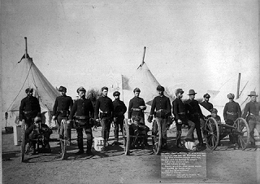
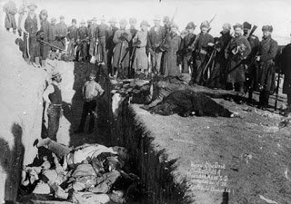

“What’s happening in my country is also happening in your country…. You don’t even know it, but you’re the Indians of the 21st Century, and that’s very sad.” –
Russell Means, Indian Activist and Facilitator of the newly created Independent Republic of Lakota.
Shortly before the U.S. Army slaughtered hundreds of starving, desperate Sioux who had been herded to the frozen shore of Wounded Knee Creek in South Dakota, the Census Bureau announced the disappearance of a contiguous frontier line for the first time in American history.
Manifest Destiny had run out of room, and the American Empire – a term used unblushingly in triumphalist literature of the period – now girded the entire North American continent, and its rulers were free to confer the blessings of civilization on untutored masses beyond our shores.
First in line for this unsolicited privilege were the Cubans and Filipinos. Chinese and Mexicans would taste – in the sense of being force-fed – the unpalatable fruits of American imperial benevolence, before Washington, under the reign of the unspeakably vile Woodrow Wilson, dispatched hundreds of thousands of armed missionaries for democracy to the battlefields of Europe.
American intervention broke a stalemate in WWI that could have resulted in a negotiated peace, thereby preserving Christendom. The allied “victory” helped cultivate several nasty strains of totalitarianism and bellicose nationalism, thus effectively inoculating mankind against an outbreak of peace and normalcy. This meant an unending list of imperial errands abroad, with America’s Ruling Elite using means both relatively subtle (bribery through foreign aid) and vulgar (bombing and other forms of lethal “humanitarianism”) to propagate its vision of social justice around the globe.
And as Washington eagerly audited the shortcomings of other regimes, the original beneficiaries of its civilizing mission – the residue of the various American Indian communities – were consigned to a wretched existence marked by intractable poverty, abysmal mortality rates, and pervasive despair. The status of the American Indians offered a reality-based counterpoint to America’s self-enraptured rhetoric, and the reservation system served as a kind of portrait of Dorian Grey for the regime’s image as guardian of liberty and justice. And the mass murder of Sioux at Wounded Knee served as a kind of graduation ceremony for the Regime as it prepared to export imperial violence abroad.

Roughly three years after the December 1890 massacre at Wounded Knee, historian Frederick Jackson Turner treated an audience at the Columbian Exposition in Chicago to his soon-to-be-famous “frontier thesis” – namely, that the closing of the western frontier, which he called “the meeting point between savagery and civilization,” brought an end to the first phase of America’s national life. The conquest of the frontier, Turner claimed, had refined a distinctly American character, one that was restless and inventive, fiercely individualistic and disdainful of centralized power and hierarchical authority.
Turner’s oration was, in some ways, a scholarly version of the familiar lounge singer ploy of inviting his audience to “give yourselves a round of applause.” Then, as now, Americans were eager to view themselves as hardly, independent folk, even when they were taking part in a militarized, federally subsidized land grab of unprecedented scope and shamelessness.
True, settlers and pioneers were often bold and courageous people, and more than a few of them acquitted themselves honorably both in tragic combat with Indians, and in honest commerce with them when peace was achieved. But taken as a whole, Manifest Destiny represented the triumph of corrupt corporatism.
In Westward the Tide, a typically worthy offering, novelist Louis L’Amour, the justly renowned “Troubadour of the American West” (and an autodidact whose scholarly achievements were easily the equal of Dr. Turner’s) captures the ambivalence of the expansionist period from Appomattox to Wounded Knee.
The dominant human type found on the frontier, he writes, “was a lean and cold-eyed man who feared God and nothing else…. He had courage, hardihood, and a stubborn will that balked at no problem as too great…. He was the man who refused to remain close to forts and so was often killed by Indians, his wife nursed her children with a rifle across her knees, and he tilled his fields with a gun strapped to his plough handles. He dared off Indians, the big cattlemen, the outlaws. He was the nester, the squatter, the man who moved west.”
Whether they knew it or not, L’Amour points out, individualist pioneers acted as icebreakers on behalf of the forces of collectivism.
“Railroads came west on government subsidy and gifts of government land,” he recalled. “They never advanced a foot without government land to sell, government money to spend, and the protection of the Army. The [pioneers] asked no protection from anybody, or if so, not for long, but moved on out ahead of the Army wherever their path was not blocked by too tight a line, and where they stopped they put down roots.”
And wherever these individualists put down roots, the Leviathan State would soon materialize to install the necessary apparatus of coercive conformity. This process was captured by publisher George A Crofutt – an energetic evangelist of Manifest Destiny – in his caption to John Gast’s 1872 painting “American Progress.”

The American Empire as a winsome maiden: John Gast's seminal 1872 propaganda lithograph "American Progress."
The much-produced lithograph portrayed the American State as a fair-haired, zaftig female precariously clad in a diaphanous robe, her alabaster brow garlanded with the “star of empire,” gazing westward with an expression of benevolent resolution as terrified Indians are driven in terror before her. In her right arm is clutched a volume inscribed “Common Schools,” which Crofutt exultantly described as “the emblem of our education and the testimonial of our National Enlightenment.” With her left hand she threads the countryside with “the slender wires of the telegraph, that are to flash intelligence throughout the land.”
Before this comely yet omnipotent maiden the land is alluring, yet desolate; in her wake can be found cities, “steamships, manufactories, schools and churches, over which beams of light are streaming and filling the air – indicative of our civilization,” continues Crofutt. From the cities “proceed the three great continental lines” of federally subsidized railway, as well as a stream of pony express riders, pioneer wagons, stagecoaches, gold seekers, and others drawn irresistibly westward.
But the true focus of this artistic celebration of “our country’s grandeur and enterprise,” as Croffut understands, is the handful of Indians who flee before the “beautiful and charming Female” who embodies the American State.
“Fleeing from `Progress,’ and towards the blue waters of the Pacific … are the Indians … with their squaws, papooses, and `pony lodges,’” he wrote in words oozing contempt. The Indians “flee from the presence of the wondrous vision. The `Star’ is too much for them.”
“American Progress,” as captioned by Croffut, coupled civic sanctimony with an undisguised appeal to three of the basest instincts: Simple prurience; the tribalist impulse toward the worship of collective power; and the dehumanization of those not part of the chosen collective.
The goodness of America, on Croffut’s reading, is ratified by the retreat of the Indian savages. Speaking through Matt Bardoul, one of his fictional heroes, Louis L’Amour gave voice to a less self-congratulatory view, concluding that the Indians withdrew in the face of “what some might consider a superior barbarism.”
In 1874, two years after Gale unveiled his propaganda portrait, George Armstrong Custer, an agent of American “progress,” led an invasion force into the Black Hills of South Dakota, a territory considered sacred to the Sioux and solemnly promised to them in perpetuity by treaty less than a decade earlier.
Like everyone of consequence in the employ of the American Leviathan, Custer looked upon treaties much the same way Lenin later would – as pie crusts, made to be broken as circumstances required. The Black Hills, Custer announced, were full of gold “from the grass roots down.” This turned a trickle of illegal immigration into the Black Hills into a deluge, and Washington – true to form – decided the time had come to re-write its treaty with the Sioux.
In September 1875, Washington convened a conference with Sioux representatives in the hope that the Indians would (in Dee Brown’s phrase) “sell their land in order to save the United States Government the embarrassment of having to break a treaty to get it.”
The attitude of most Sioux was captured in a defiant gesture by Sitting Bull. Informed of Washington’s desire to purchase the Black Hills, Sitting Bull replied by picking up a pinch of soil and releasing it to the wind. “I want you to go and tell the Great Father that I do not want to sell any land to the government – not even as much as this.”
Faced with an owner not interested in selling land, the government did what it always does: It prepared to steal the land and murder those determined to defend it. Preparations began to “whip the Indians into subjection,” as Indian Bureau Inspector E.T. Watkins put it.
Of course, it didn’t turn out quite that way when federal forces collided with a huge coalition of Plains Indians the following June at what the Sioux called the Battle of Greasy Grass – or what the losers in that engagement called the Battle of the Little Bighorn.
After the Seventh Cavalry was routed and its vain and bloody-handed commander was sent to hell, the Leviathan embarked on a course of collective punishment. Not able to track down Sitting Bull, Gall, Crazy Horse, and other Indian commanders who had beaten their Army and defied the “Star of empire,” Washington authorized the impenitent war criminal Gen. William T. Sherman – the General Westerman of the Union’s war against the South – to treat all Sioux on the reservation as prisoners of war. This meant that those who had not fought would be punished as retaliation for the Indians’ victory.
Although they were not definitively beaten on the battlefield, the Sioux were eventually broken through terror, political pressure, and the relentless logic of demographics. The Americans were too numerous to repel, their government too powerful to resist, their rulers entirely without pity or scruple.
Crazy Horse was determined to withstand the federal Army, but eventually be he made the bitter choice to bring his people onto the reservation in order to avoid starvation. When he learned that the same government that had stolen his lands and killed his people was enlisting Sioux to kill Chief Joseph’s Nez Perce – a northwestern tribe experiencing the same treatment at the hands of the empire – Crazy Horse threatened to rebel and leave the reservation.
After an informant learned of Crazy Horse’s plans, the chief was “arrested” by Indian Agency police – whose number included several Sioux Quislings, including Little Big Man -- and then assassinated by a US Army Private at Ft. Robinson.
After the death of Crazy Horse in the fall of 1877, his parents – part of a Sioux band hoping to withdraw to Canada and find sanctuary there with the exiled Sitting Bull – buried their son’s body near a creek called Wounded Knee, on a parcel of land that would soon become the Pine Ridge Indian Reservation.

Sitting Bull fled to Canada after the battle of Greasy Grass in the hope that his people would be protected as subjects of the British Crown. However, Washington’s intervention prevented the Great Chief and his followers from obtaining a parcel of suitable land. In July 1881, Sitting Bull joined Crazy Horse, Red Cloud, Red Dog, Spotted Tail and other Sioux chiefs in choosing surrender over starvation.
Imprisoned at Ft. Randall in violation of promises of decent treatment, Sitting Bull’s resilient dignity proved to be an obstacle to federal Indian commissioners, who wanted to make sure that the resistance of the Sioux had been permanently broken. In his first meeting with the commissioners, Sitting Bull treated the bureaucrats with regal contempt, taunting them for “acting like men who have been drinking whiskey” in demanding that the Sioux formally turn over the coveted Black Hills.
Apparently, concern for the fate of his long-suffering band of followers caused Sitting Bull to temper his tongue in a follow-up meeting. Predictably, the Indian Commissioners weren’t inclined to reciprocate; instead, they seized an opportunity to upbraid Sitting Bull for his defiance and harangue him about the manifold glories of the Imperial State.
“You are not a great chief of this country,” lectured Republican Senator John Logan of Illinois. “You have no following, no power, no control, and no right to any control. You are on an Indian reservation merely at the sufferance of the government. You are fed by the government, clothed by the government, your children are educated by the government, and all that you have and are today is because of the government…. The government feeds and clothes and educates your children now, and desires to teach you to become farmers, and to civilize you, and make you as white men.”
Logan unbosomed himself of this totalitarian homily decades before Mussolini encapsulated the same worldview in his fascist credo: “Everything within the State, nothing outside the State, nothing against the State.”
Eventually, through the application of its favorite tactic – negotiation through extortion, in the form of threatening to starve the Indians if they didn’t surrender their lands – Washington was able to secure ownership of the Black Hills. By an 1889 act of Congress, the pitiful remainder of the original 1868 treaty land was divided into six small reservations in South Dakota. The Sioux themselves were disarmed, deprived of their horses, and confined to reservation plots.
Prior to the 1889 treaty, the Sioux had been promised that the subsistence rations promised in the 1868 pact would continue. But once the Black Hills had been signed away, Washington saw no need to fulfill its end of the agreement it had wrung from the Sioux, and Congress promptly cut the rations by half. By 1890, the promised rations were being withheld outright. Several years of poor harvests left the Euro-American residents of South Dakota struggling; the captive Sioux were starving.

Master of the Ghost Dance Wovoka (seated on the right).
Confronting utter annihilation, the Sioux suddenly experienced a religious revival. A Paiute holy man named Wovoka was preaching an eschatological doctrine that combined mysticism with elements of the New Testament.
By 1891, he prophesied, the buffalo would return, dead warriors by the thousands would arise from their graves, and a great wind would sweep the White Man’s government from the land.
Until then, Wovoka taught, the Sioux was to keep the peace.
“When your friends die, you must not cry,” he insisted. “You must not hurt anybody or do harm to anyone. You must not fight. Do right always. It will give you satisfaction in this life. Do not tell the white people about this. Jesus is now upon the earth.”
Rather than resisting the Whites by force of arms, Wovoka explained, the Indians were to clothe themselves in a special “medicine garment” that would protect them from bullets, and perform a “ghost dance” in order to worship the messiah and express the hope that his kingdom would soon prevail.
This new religion – a kind of Indian Sufism, without the militancy that informs the original Muslim version – gave the desperate, starving Sioux a sense of hope and the beginnings of a new shared identity. So of course, it had to be suppressed with alacrity and severity.
In October 1890, Daniel F. Royer, a disgraced pharmacist and former M.D. (his license had been revoked in California owing to a drug addiction) was appointed Indian Agent at the Pine Ridge Reservation. He had no experience in Indian affairs; his appointment was done for purely political reasons. About two weeks later, Royer dispatched a panicky telegraph to Washington demanding military intervention and the arrest of the Sioux leaders.
Sensationalistic accounts of purported Indian plots clotted the air and darkened the pages of newspapers across the country. Royer and other Indian Agents issued arrest warrants for Indian “troublemakers” on any available pretext. In early December, the South Dakota Home Guard, a militia which had been created by Governor Arthur C. Mellete less than a month earlier, ambushed and massacred and scalped 75 Sioux Ghost Dancers.
Early on December 15, an aged Sitting Bull was surrounded by a task force of 43 police under the command of Lt. Bull Head, an Indian Quisling. The Great Chief was prepared to surrender peacefully, but after a large group of Ghost Dancers materialized to protest the unprovoked arrest he had second thoughts. After one of the Ghost Dancers produced a rifle, one of the policemen drew a gun and shot Sitting Bull in the head at point-blank range.
The murder of Sitting Bull prompted his half-brother, Bigfoot, to flee with his people to the reservation at Pine Ridge in search of sanctuary.
Bigfoot suffered from such severe pneumonia that he was coughing up blood; his weary, emaciated followers – roughly 120 men and about twice that number of women and children – weren’t in much better shape. Yet Major Samuel Whitside, who intercepted Big Foot’s band on December 28, insisted on treating them as a captured military force. Under the guns of the Seventh Cavalry – which retained the bitter institutional memory of its defeat at Greasy Grass/Little Bighorn – the band was taken to a camp on the banks of Wounded Knee Creek, where the Indians were to be disarmed.


Bigfoot and his followers were ringed with two troops of Cavalry; four wagon-borne Hotchkiss rotating rifles, which were able to hurl explosive charges up to two miles, were carefully positioned on a rise outside the camp.
Shortly after dawn on December 29, the Army began to collect rifles from Big Foot’s followers. With weary resignation, the Indians surrendered the only independent means of obtaining food, leaving themselves entirely at the mercy of a capricious enemy that had frequently used starvation as a weapon.
Impatient with the pace of the gun turn-in, several contingents of soldiers fanned out through the camp, going from tent to tent to confiscate any hidden firearms. This prompted an understandable outcry from the women whose dwellings were violated.
One young man, a deaf-mute named Black Coyote, balked when his turn came to hand over his rifle. Holding his Winchester above his head, this young man – who had committed no crime and threatened nobody – somehow conveyed to several onlookers the sentiment that he had paid good money for his rifle and didn’t intended to give it up. He was swarmed by several soldiers.*
Shortly thereafter, a shot pierced the pregnant silence, inducing delivery of the massacre that became inevitable when the disarmed Sioux fell into the hands of a vengeful Seventh Cavalry.

“We tried to run,” testified survivor Louise Weasel Bear, “but they shot us like we were buffalo.” The ailing and helpless Bigfoot was gunned down, his disease-racked body left grotesquely twisted in the snow. He was joined by as many as 300 of his followers.
“Dead and wounded women and children and little babies were scattered all along … where they had been trying to run away,” recalled Ogalala medicine man Black Elk, who arrived shortly after the slaughter. “The soldiers had followed along the gulch, as they ran, and murdered them in there. Sometimes they were in heaps because they had huddled together, and some were scattered all along. Sometimes bunches of them had been killed and torn to pieces where the [Hotchkiss] wagon guns hit them.”
Those who resisted survived. Black Elk recounted how two small boys had taken up sniping positions and killed as many soldiers as they could: “These were very brave little boys.” Other Sioux had “fought soldiers with only their hands until they got their guns.” An Army Captain named Wallace was surrounded by a scrum of Sioux mothers and beaten to death with clubs.
But this was not a “battle,” as it was referred to for a century after the event. It was a massacre of helpless, innocent people by Leviathan’s killing apparatus. When Black Elk arrived on the scene, what he saw was not a battlefield, but rather “one long grave of butchered women and children and babies, who had never done any harm and were only trying to run away.”


When survivors sought medical help, they discovered that the first priority was to tend to the wounds of the handful of Army personnel who had been injured in the course of carrying out the slaughter. Many of them perished from exposure and untended wounds. For several days the ground at Wounded Knee was littered with the bodies of the dead. On January 3, 1891, the mortal remains of the victims were gathered and interred in a mass grave.
The military expedition that carried out the massacre cost an estimated $2 million in 1890 dollars. This did provide a welcome “economic stimulus package” for local communities. But it’s worth remembering that it would have cost just a fraction of that amount to provide the starving Sioux with the rations they had been promised under the original 1868 treaty.
But Washington apparently believed the additional expense was worthwhile in order to extract the last full measure of submission from the once-fearsome Sioux. Providing the Seventh Cavalry with an opportunity to avenge its defeat, and thereby vindicate the power of the “Star of empire,” was a lagniappe.

To this day, the U.S. Army proudly displays the “battle streamer” of what is called the Wounded Knee “campaign.” Dozens of participants in that atrocity – which can properly be called America’s Babi Yar – were awarded the Congressional Medal of Honor. The monument to the “heroes of Wounded Knee Creek” still exists at Ft. Riley, Kansas.
Although it closed the curtain on America’s Frontier Era, Wounded Knee was merely the overture to Leviathan’s career in imperial butchery. The outward course of the “Star of empire” has been marked with atrocities displaying a family resemblance to that massacre and the tactics that led to it.
Just a few years later, the Empire mounted a counter-insurgency campaign that would lead to the imprisonment, torture, and slaughter of tens of thousands of “liberated” Fillipinos. At the close of WWI, Washington and its allies used the same tactic that had been so successful against the Sioux – deploying the weapon of starvation to secure submission to a treaty – against defeated imperial Germany.
The draconian “peace” that prevailed following the American-enforced starvation blockade thrust to power a totalitarian movement headed by a perverted little Austrian who thought that Washington’s treatment of the Indians was a suitable model for dealing with “inferior” races in Europe.
A century after Wounded Knee, the same American Leviathan that had starved the Sioux into submission imposed a murderous embargo of Iraq that would last for more than a decade and kill hundreds of thousands of children. After using starvation and the denial of medical necessities to soften up the Iraqis, the Empire – already bogged down in Afghanistan -- launched an invasion Iraq.
And as Scott Horton of AntiWarRadio points out, wherever the Empire deploys its legions abroad, the territory not under imperial control is referred to as “Indian country.” With entirely unwarranted optimism, most Americans assume that this only applies abroad. But every once in a while – as at Ruby Ridge or Waco – the Empire offers a bloody reminder that Wounded Knee remains the official template for dealing with any resistance, foreign or domestic.
In a fascinating interview with Scott Horton, Indian activist Russell Means describes how the American Indian Reservation System has been the incubator for totalitarian social engineering programs both here and abroad. The subjugation of the American Indian, he warns, provided the model for the ongoing dispossession of the American middle class.
As the financial system implodes, inhabitants of our de-industrialized country are having what remains of our wealth confiscated in order to serve the interests of the most corrupt elements of the ruling elite. The sky is thick with portents of impending military rule in order to suppress any organized resistance to this unprecedented plunder.
We will know that the Wounded Knee option is on the table when our rulers demand of us what they required of the conquered Sioux: The surrender of our personal firearms.
It is a glorious fact that America's private gun owners possess more firearms than the combined armies and police forces of the entire world. It is that fact, and perhaps it alone, that explains why the Regime hasn't succeeded -- yet -- in transforming our country into one giant Rez. We should never assume that this cannot change, in a hurry.
--
*In the original version of this essay, I wrote that Black Coyote, reportedly a deaf-mute, "exclaimed" that he resented turning in his rifle, which he could not literally do if he, in fact, suffered such disabilities. My thanks to commenter "Mike" for catching this inadvertent contradiction.
Video extra
As is usually the case, the incomparable Maxwell Smart blunders into the truth (watch to the end of this episode).

48 comments:
The whole awful plight of the Sioux sounds like a good movie project for Mel Gibson and his Icon Productions. I would be happy to see Mr. Gibson make a movie depicting the true story as told from the Meso-American perspective, a type of Sioux 'Braveheart' including truthful depictions of the Battle of Greasy Grass and the massacre at Wounded Knee. I believe Gibson could touch people's hearts with the nefarious and bloody treatment of the Sioux and other Meso-Americans by Leviathan.
As you say, the ruling class is so rapacious that our guns might be the only thing keeping them from just sending the death squads and putting us out of our misery- realizing their vision of having who's left live in compact cities while they have lavish estates in the countryside. There was an entity in a TNG episode called "Where Silence Has Lease". Like Nagilum, who found it amusing to kill crew members at random, it amuses the financial elite to steal untold trillions and destroy the currency. It might be wise to stock up on storable food and thousands of rounds of ammunition.
As always a very sound thoughtful read - but also very depressing. Is there temporal hope?
May God bless and have mercy on all mankind. A beautiful and tragic piece, Mr. Grigg.
-Sans Authoritas
WNG I just wanted to bring this to your attention so you can comment as you do so well.
This case stinks to high heaven and I believe the cops will get away with this.
Here is a sensitive kid who wanted to live in the old days, back when America was something. He loved the past. Well using AR-15s at 8 feet the Seattle cops hit him 7x.
DESPITE a witness telling the cops all the kid had was blanks.
The Seattle Post-Intelligencer stated that witnesses said the kid DID NOT Point the old bolt action at the cops.
ONLY Cops should have "assault weapons" says Obama and the Demonrats.
God HELP us!
Witness: Student shot by police had no live ammo
http://www.komonews.com/news/37025944.html
http://seattlepi.nwsource.com/local/394564_copshooting03.html
Once again you have stripped the propaganda down to its bitter core. The ongoing "pacification" of Gaza has caused me to reflect on our own history of the glorious state defending itself from recalcitrant savages. Thank you for giving me some references to fleas out the story for myself. Were all on the Rez now.
Interesting article, but you wrote: "One young man, a deaf-mute named Black Coyote, balked when his turn came to hand over his rifle....this young man...exclaimed that he had paid good money for his rifle and didn’t intended to give it up.'
How does a "deaf-mute" exclaim anything?
Mike -- Good catch! This illustrates, once again, the risks one runs in being his own editor, I'm afraid -- not to mention the danger of letting one's metaphors get the best of him.
Black Coyote's "exclamation" most likely came in the form of gestures understood by other Sioux who were in his vicinity -- not necessarily in formal sign language, but his meaning was taken by at least some eyewitnesses. He did hold the rifle aloft, and he somehow conveyed his frustration over being forced to turn over something that rightly belonged to him.
The details are ambiguous and contradictory. Several accounts hold that Black Coyote was actually
handing over his gun at the time the first shot was fired.
With sufficient education in the broader themes of human cultural history, no is surprised by the rise of the Ghost Dancer movement. The culture of the Native Americans is far closer to the Biblical Hebrew than any part of Western Civilization. While they did not have God's leading in their cause, they did have an instinctively better understanding of God's Word than those who carried it westward across this continent, and only thought they knew what it was about.
Let them try and "pacify" the palestinians all they want. It will not work. That is one group of people that will fight until the bitter end. And they are also great at producing large families thus insuring that there will be more young warriors to fight the good fight well into the future.
“What’s happening in my country is also happening in your country…. You don’t even know it, but you’re the Indians of the 21st Century, and that’s very sad.”
True. The truth hurts, but it's true.
This new religion – a kind of Indian Sufism, without the militancy that informs the original Muslim version
The first ones to resist against the American occupiers in Baghdad were the Sufis.
The first ones to resist against the American occupiers in Baghdad were the Sufis.
I didn't know this, but it doesn't surprise me.
When Russell Means was running for the nomination of President of the United States in the Libertarian Primary of 1988 (against Ron Paul) he wryly commented in convention that the people ruling this nation were turning this nation into one giant reservation. I knew he had hit the nail on the head right then.
It's sad but aren't we seeing history repeat.
Is not the massacre of Gaza a repeat of Wounded Knee?
If you try to make comparisons between Gaza and Wounded Knee, you have to look past the TV set that tries to make Israel appear the aggressor.
The US government usually broke treaties with the Indian tribes. The Arabs continually break treaties between Israel, Palestine and neighboring Arab countries.
When the Indians fought against the US, they did not use women and children as a shield to prevent their warriors from being shot. The Palestinians put their terrorists among noncombatants so that the civilian casualties will be large enough to get a TV spot.
David is still Jewish. Goliath, Hamas, is still supported by the massed armies of the Arab nations. Remember if Syria, Egypt and Iran attacked Isreal the world opinion would be against them.
Back to the original post, Wounded Knee was similar to Sand Creek in that both were avoidable and both cast black showdows on the citizens of America.
I wish all the best on this Lord's Day.
Dave
Dave @ 8:36
They have no choice there are 1.5 million citizens for a land mass around 1/4 the size of RI. Pretty hard to separate yourselves from the women and children.
Cluster bombs, night and thermal imaging technology, spy drones, satteleite tecnology, F-16s, Abrams tanks, nuclear missles ( Israel) vs. knapsacks, head robes,shoulder fired missiles,hand guns and old A -K 47s mounted on the roofs of an old Toyota(Hamas). Now say again who is David and who is Goliath?
Stuart Bevin
Dave, do Christians care about "world opinion," or do they care about justice?
The State of Israel is the initial aggressor. It was the aggressor when it was founded by the U.N. in 1948, and it has done nothing to indicate that it has any more right to exist than any of the marketplace-bombing murderers living in Palestine.
Here's the deal: it's not my concern. I owe nothing to the State of Israel. I owe nothing to the Palestinians. The only thing I owe to anyone is to treat every man with justice, and as a person created in the image and likeness of God.
I like Jews. I like Arabs. I detest murderers and all other unjust aggressors/statists.
Smart people, Jewish or Arab, recognize the stupidity of such longstanding, bloody feud situations and get out of Dodge if they possibly can.
The situation in the Middle East is not a "David versus Goliath" scenario. It's two immature children writ large, taunting each other and periodically giving each other bloody noses. One of these days, one or the other is going to have enough of the taunts and kill the other. I personally think the State of Israel is just waiting for an excuse to head into Gaza and pull off the "final solution" to the Palestinian question. "Gasp," I hear some people say. "A State, creating/using a crisis as a pretext to invade another country and kill off its inhabitants? Never! Not Israel! God is with them! They are, by definition, God's chosen people, and therefore, anything they do is moral!"
No conspiracy theory here. I don't think the Israeli government has a big notebook with a plan on how they are going to create an incident and invade. States don't play that way, usually. States are merely collections of powerful adults who act according to infantile mindsets: "You started it, so anything I do in retaliation is justified. You hit me, so I'm going to hit you back even harder! Who cares if it solves anything, I'm just really mad right now!"
May God bless human beings with peace, and may he eradicate the mental illness of the State.
-Sans Authoritas
Stuart 2:27 pm
Re: David and Goliath/Israel and massed armies of the Muslim nations
The population of the Middle East is 197 million. Out of that is Israel-population 7 million.
The comparison given was not between Israel and the Gaza Strip.
Stuart-
FYI: Israel doesn't have Abram tanks. The U.S. wouldn't sell "offensive" weapons to them, so they made their own tanks called Merkava. (But F-16s aren't "offensive" weapons?) But your point is well taken.
Again, Ron Paul is right. No foreign aid should be dispensed to any foreign country at American taxpayer's expense. It's not America's duty to take care of the world, -and it doesn't look like we can even take care of ourselves much less anyone else- and the U.S. government certainly shouldn't be giving away military hardware.
To my fellow Christians: America is NOT Jesus, and God does not need America to take care of Israel. God doesn't need America for anything. Israel is strong enough on her own, and if Israel's leadership actually trusted in the Lord in lieu of their Anglo-American puppetmasters, they wouldn't be nearly as belligerent as they are now, especially in light of the Gazan massacre. BTW, Israel should expect retaliation any time they block Gazan ports, just as they retaliated when Arab powers blockaded Israel in 1967.
To my fellow Christians: America is NOT Jesus, and God does not need America to take care of Israel. God doesn't need America for anything.
Genuine Christians would never need such a reminder, as the very idea behind the statement would have never occurred to them in the first place. As for America's "evangelicals", well, that's a very different story...
Stuart, why don't those in Gaza who want to leave for their own safety go to Egypt? Why doesn't Egypt provide supplies to Gaza?
Egypt won't let them in. In fact, Egypt has a fence to prevent illegal immigration from Gaza. Egypt was caught on film allowing munitions from other Arab nations to cross the Egyptian border to Gaza.
Sans Authoritas and Liberrantr, right now American Christians don't know what to consider as right or wrong. That is why I continually request that Christians return to proper worship and to return to God.
American Christians do need reminders to return to Christ. If we didn't need reminders, we wouldn't be in the mess we are in right now. Don't bother pointing fingers because there is more than enough blame to go around.
Pray for your brothers and sisters in Christ. Pray for your enemies. Pray for a peaceful solution to be reached in Gaza. Pray for our country to be established in righteousness for His name's sake.
Dave
Those of us who just want to live and let live, to be left the hell alone by those who "know what's best for us" have run out of room to run.
My people as a whole have rejected their GOD and demanded since the time of Saul to be ruled by men. Well, the fools have gotten their wishes. We are now, except for a very few, subjects, no longer sovereign.
How I pray for the day my KING will return, ruling with a rod of iron, DEMANDING justice. The howls of anguish from the "we know what's best for you" crowd will be loud and long, music to the ears of we who seek justice.
Patience brothers and sisters, patience. The fullness of time is swiftly approaching.
American Christians do need reminders to return to Christ. If we didn't need reminders, we wouldn't be in the mess we are in right now.
Dave, you're absolutely correct and I think that your first sentence in the quote above points to the root of the problem - nationalism. Most American Christians are, whether or not they realize it or wish to admit it, ardent nationalists first and Christians a very distant second. Granted, this condition is by no means historically unique to Americans who call themselves Christians, but it has manifested itself in particularly virulent and destructive form in this country in the late 20th and early 21st centuries.
The bottom line is that America's Christians must make a choice: either they lead their lives in accordance with the teachings of the Gospels and love all of their fellow man as Christ commanded, or they follow the Red, White, and Blue banner of the American state. There is no middle ground, as the two paths are mutually exclusive. In other words, Christians in the United States, if they really and truly are such, are going to have to face the prospect of living the lives of their First Century ancestors, complete with persecution, poverty, and even ugly and violent death at the hands of the State.
For a living example, look at the burgeoning Christian communities in Sub-Saharan Africa and South Asia that thrive despite --indeed, probably because of-- persecution at the hands of their non-Christian neighbors and their own governments. The lesson appears clear - the Christian Church tolerated or sanctioned by the State is a co-opted church. The defeated Sioux people clearly realized this, as evidenced by their formation of an alternate sect not sanctioned by the white man's government, which realized the threat to its power that this group presented and wasted no time in obliterating it. (Or trying to. I have no doubt that remnants of this sect continue to exist today in some form on the Pine Ridge and other reservations).
If you try to make comparisons between Gaza and Wounded Knee, you have to look past the TV set that tries to make Israel appear the aggressor.
Eric Margolis' column from Lew Rockwell:
http://www.lewrockwell.com/margolis/margolis131.html
There are two completely different versions of what is currently happening in Gaza.
In the Israeli and North American press version, Hamas – "Islamic terrorists" backed by Iran – have in an unprovoked attack fired deadly rockets on innocent Israel with the intent of destroying the Jewish state.
North American politicians and the media say Israel "has the right to defend itself."
For decades now IDF has targeted CHILDREN, they lure them out then snipers take them out, almost as a sport.
Luke 17:2
It were better for him that a millstone were hanged about his neck, and he cast into the sea, than that he should offend one of these little ones.
What about how any politician or professor who speaks out against the wholesale suborning of our congress is DESTROYED?
The cost to Americans from this "special relationship" is staggering:
http://www.csmonitor.com/2002/1209/p16s01-wmgn.html
The lady who runs this website, an American, receives DEATH THREATS from the supporters of Israel:
http://www.ifamericansknew.org/
I'd like to end with a quote from Mike Rivero, which he wrote a few years ago when the AIPAC arrests were first announced:
So here is the mother of all scandals.
For two years, the FBI has suspected AIPAC of spying for a foreign country, and for those two years (and for decades before) that group suspected of spying for Israel has been reshaping the US Congress for the benefit of a foreign government.
And THAT is the mother of all scandals.
Think about that as billions of your tax dollars flow to Israel while your roads and schools crumble and decay and services are cut.
Think about that as the coffins come home with your loved ones inside.
Think about that when you and a million of your fellow citizens march down the streets of America opposing wars built on lies and deceptions and wonder why the government just doesn’t want to listen to you any more.
This is off topic, slightly, and your other readers have probably already tipped you off to it, but, nonetheless, via LewRockwell.com, police manslaughter:
http://www.lewrockwell.com/blog/lewrw/archives/024723.html
Anonymous @ 8:31 AM said: For decades now IDF has targeted CHILDREN, they lure them out then snipers take them out, almost as a sport.
Let's see some objective reference, some proof. Otherwise, you destroy your own credibility and we can discard the rest of what you wrote as propaganda. Of your cause is just, you don't need to lie or fabricate. The pro-Hamas side has no credibility because they lie.
The other side of the story is important to understand, too.
http://hnn.us/articles/7302.html
To anonymous 10:12
http://rememberthesechildren.org/remember2008.html
Anonymous @ 11:53 am --
Thanks for the link. The essay usefully fleshes out some of the context, but it strikes me as a protracted exercise in special pleading.
Witness, for instance, the author's reference to "the encounter at Wounded Knee" -- "encounter"? Was this a therapy session of some sort?
Consider as well the antiseptic language describing them, ahem, *encounter* between Sioux and the guns of the Seventh Cavalry:
"While an encampment of Sioux was being searched for arms, a few young men created an incident; the soldiers, furious at what they considered an act of Indian treachery, fought back furiously as guns surrounding the encampment opened fire with deadly effect."
"Fought back" implies that it was somehow the starving, outgunned, helpless Sioux who were the aggressors here.
He continues: "In a situation where women and children were mixed with men, it was inevitable that some of the former would be killed.... There may have been a few deliberate killings of noncombatants, but on the whole, as a court of inquiry ordered by President Harrison established, the officers and soldiers of the unit made supreme efforts to avoid killing women and children."
Color me cynical, but I'm generally not persuaded when a Federal inquiry into a Federal atrocity ends up acquitting the Feds. Numerous eyewitnesses confirmed that scores or hundreds of women and children were slaughtered at Wounded Knee, despite the "supreme" effort supposedly made to avoid killing noncombatants.
But the single biggest problem with this essay, as it typical of its genre, is this: It doesn't acknowledge that the dispossession of the Indians -- particularly seizure of the Black Hills from the Sioux -- was a criminal act. That the Feds occasionally discriminated between combatant and non-combatant in carrying out that policy, or otherwise exercised restraint, doesn't change the underlying nature of the offense.
Let's see some objective reference, some proof. Otherwise, you destroy your own credibility and we can discard the rest of what you wrote as propaganda. Of your cause is just, you don't need to lie or fabricate. The pro-Hamas side has no credibility because they lie.
Surely objective observers will note the tone here. This is most recognizable to anyone who has debated the Zionists.
They use a software program known as MEGAPHONE.
From the London Times:
From The Times July 28, 2006
Israel backed by army of cyber-soldiers
From Yonit Farago in Jerusalem
WHILE Israel fights Hezbollah with tanks and aircraft, its supporters are campaigning on the internet.
Israel’s Government has thrown its weight behind efforts by supporters to counter what it believes to be negative bias and a tide of pro-Arab propaganda. The Foreign Ministry has ordered trainee diplomats to track websites and chatrooms so that networks of US and European groups with hundreds of thousands of Jewish activists can place supportive messages.
In the past week nearly 5,000 members of the World Union of Jewish Students (WUJS) have downloaded special “megaphone” software that alerts them to anti-Israeli chatrooms or internet polls to enable them to post contrary viewpoints. A student team in Jerusalem combs the web in a host of different languages to flag the sites so that those who have signed up can influence an opinion survey or the course of a debate.
By proof you must surely mean EVIDENCE?
Although when debating the Zionists it is important to remember they DO NOT WANT the TRUTH to come out. They merely wish to distract the reader from the awful truth of what they do.
Just as they use the BIG LIE technique with the topic of the USS LIBERTY.
Here is something about the targeted murder of innocent children:
“The boys, most no more than ten or eleven years old, scattered, running clumsily through the heavy sand. They descended out of sight behind the dune in front of me. There were no sounds of gunfire. The Israeli soldiers shoot with silencers. The bullets from the American M-16 rifles tumble end over end through the children’s slight bodies. Later, in the hospital, I will see the destruction: the stomachs ripped out, the gaping holes in limbs and torsos... Children have been shot in other conflicts I have covered, but never before have I watched as soldiers enticed children like mice into a trap and murdered them for sport.”
Christopher Hedges, former NY Times correspondent on assignment in Gaza
War Is A Force That Gives Us Meaning (2002)
Also in his magazine article, in "A Gaza Diary: Scenes from the Palestinian Uprising," Harper's magazine, October 2001, p. 64
Hedges was a member of the New York Times team that won the 2002
Pulitzer Prize for Explanatory Reporting
Australian film maker Richard Franklin was filming with IDF soldiers in Palestine, he stood behind them while they shot at school children on their way to classes.
This site is maintained by former US State Department personnel whose hands were tied while employed so they could not get the truth out.
http://www.wrmea.com/
Taki has a comment on the Gaza terrorism by Israel:
http://www.takimag.com/blogs/article/the_gaza_massacre
Anonymous #1,
This Native American movie was already made, in 1970. It starred Dustin Hoffman and was titled "Little Big Man." You can watch it online. It was one of the most devastating movies I have ever seen - for years afterwards remembering that movie brought a knot to my stomach and a pain to my heart. As also does this awful narrative by Mr. Grigg.
Dear Will,
You have chosen to call the State "Leviathan," the ravenous sea monster, no doubt after Thomas Hobbes' 1651 book of the same name. However, Hobbes was in FAVOR of the monolithic state and of monarchical dictatorship.
I like the term "The Nosferatu" for the oligarchs, from the 1922 German film of the same name. The state and its minions are blood-sucking vampires, preying upon the very life-spirit of the living, and turning them into pale shadows and zombies. This vampire state is impossible to kill, and lives under the soil like a horde of creeping worms, reposing in a coffin which is the abode of death, hidden away from the sunshine and the light of day, creeping voraciously about in the shadows of the night and seeking living flesh and blood to devour.
This pretty much describes all government, from my local city council to my State government to the horrid and stinking putrescence that sits in Washington atop Capitol Hill, truly, "like unto a whited sepulchre which outwardly is fair to behold, but within is full of dead men's bones."
It seems that it has always been so, and will always be so, down through the centuries and across all continents: Ariel Sharon. Menachem Begin. Robert Mugabe. Sani Abacha. Mao. Kim Jong Il. Stalin. Pol Pot.
Moreover, all those men referenced above pursued and still pursue their evil careers, unmolested by those who call themselves our leaders and call upon us to be docile and good. All of those men died or will die peacefully in their beds. Why? Because all governments around the world, however evil, recognize in each other fellow criminals. Far be it from any of them to actually do anything to stop the bloodsucking - that would expose them as the same breed of monster.
Sincerely,
Lemuel Gulliver.
===================================
PS: I'm not finished. This exchange is asinine:
(Quote) "Anonymous @ 8:31 AM said: For decades now IDF has targeted CHILDREN, they lure them out then snipers take them out, almost as a sport."
(So-called rebuttal) "Let's see some objective reference, some proof. Otherwise, you destroy your own credibility and we can discard the rest of what you wrote as propaganda. If your cause is just, you don't need to lie or fabricate. The pro-Hamas side has no credibility because they lie."
Sir, I challenge you to produce one iota of proof that the so-called Holocaust happened. Where are the orders from Hitler? Where are the subordinate orders to the thousands who carried out those orders? The Third Reich was meticulous about keeping written records. Why is there NOWHERE the smallest scrap of paper with such an order? Where are the gas chambers? (Except for those "rebuilt" post-WWII.) Where are the bodies? What source of fuel was used to cremate 6 million people, (It takes an hour or more to dispose of one body - go visit any crematorium for proof - it would have taken decades to cremate 6 million people) in the midst of a war in which every drop of gasoline and ounce of coal was precious? All you have is a cacophony of accusations from the race which has plundered and extorted money from the rest of mankind for 3,500 years.
Does this mean that the Holocaust never happened? To use your criteria of "proof," it would seem absolutely that it did not. I would say to you, sir, SHOW ME. Or else, you too are a barefaced liar.
However, I believe the disappearance into thin air of millions of people requires no proof. Whether it was two million, or three million, or six million, is not relevant - millions vanished without a trace. No "proof" of that is needed.
I believe the dead children of Gaza with bullets in their backs require no proof. I believe the Israeli sound trucks taunting the children in Arabic: "Dogs of Gaza! Where were your mothers last night? Gaza pigs! Where are you brave sons of Mohammed? Come out and let us see you!" and then, when the children emerge to throw stones, picking them off like fish in a barrel - yes, indeed, that has been documented by non-Arab Western journalists. You may read it in Harper's Magazine. A fairly reputable journal.
A bullet in the back of a child requires no "proof."
Sir: Go take your pompous hair-splitting nonsense and insert it where it hurts the most.
Yours in Christ,
Lemuel Gulliver.
Au contraire, Liberranter,
Genuine Christians do need reminding just as the Apostle John admonished his fellow believers at the end of his first epistle saying "Little children, guard yourselves from IDOLS."
And not all evangelical Christians have swallowed the koolaid of statism and party politics. I'm such an example, for I am an evangelical Christian AND a paleo-libertarian. I enjoy reading Murray Rothbard just as much as I enjoy reading William Lane Craig. My evangelical Christian pastor endorsed Ron Paul as well as I. We are a minority, but we're working hard to rid our community of statist and jingoist assumptions and political idolatry.
And yes Israel is led by evil leaders, but so is every other nation-state. What Israel is doing now in Gaza is at best overkill and at worst democide. Christian believers can cite Ezekiel 36:22 as a template for our basic Christian understanding regarding Israel. In that passage, God states that He causes the second Jewish return (Isaiah 11:11-12) to their ancient homeland but that the Jewish people didn't earn it; He does it solely for His holy name's sake. With that understanding, I know Israel is far from moral perfection -as is every other nation- and should not be above moral criticism. But as a evangelical Christian, I believe the scriptures are true and divinely inspired, so if God restored political Israel who am I to say that God was wrong? And so I have no problem with the existence of a Jewish state. But I do understand your disagreement with my position if you're a non-Christian, a Roman Catholic or Byzantine Orthodox or an amillennialist.(BTW, I am not a dispensationalist; I'm an historic premillennialist.)
This was an absolutely powerful and insightful essay. Too, it's a reminder that the History Books are written by the victor and not the vanquished.
Its a gross understatement to call our nation's treatment of the native North American tragic. We can only beg the Almighty's mercy as we repent and seek justice for the oppressed.
One Christian Libertarian's two cents....
Anon 7:22 - Thank you for the clarification. I apologize if my post seemed to imply that ALL evangelicals are statist, an assumption that is clearly contrary to the libertarian core value of recognizing the individual rather than the collective.
You've probably noted from the general tone of my posts a certain sense of resignation to the idea that the cultural and moral rot permeating Western Civilization in general and American civilization in particular is now so pervasive and advanced as to have contaminated even the last bastion of human decency, namely the Christian Church (the one difference between the Roman Empire in its terminal stages and contemporary America is that the Roman Empire had become Christianized at the time of its collapse, whereas America seems to be reverting back to pre-Christian barbarism at the onset of its death throes). I am grateful to you and the other regular posters to this blog (not to mention its owner himself) for reminding me that there is still hope.
Anonymous @ 7:22,
There is an important difference between that which God allows, and that which God wills. If God allowed the state of Israel, just as he allowed George Bush, Stalin and Hitler to rise to power, it does not mean that he willed any of it to happen. God ordains things, and he permits things. We must not confuse the two.
God has been known to send and allow plagues upon sinners and saints alike. Some of those plagues wore crowns. The fact that God allows something evil to happen is not to say that the evil is good, desirable, or that the evil should not be striven against.
-Sans Authoritas
I argued that God did will, not merely permit, the creation of Israel for His purposes and promises, primarily for His name's sake, as a myriad of O.T. passages attest. (I cited just a few passages in Ezekiel 36:22 and Isaiah 11:11-12.)
I do believe that evil human players were used by God -just as God had used Pharoah for His earlier purposes- to create Israel. The UN, a creation of the nefarious Anglo-American power elite, partitioned Palestine (ancient Judea, Samaria and Galilee) for both an Arab and Jewish state. After the Roman enforced second century diaspora, a remnant of small Jewish communities remained in Palestine. During the final days of the Ottoman empire, Palestine remained a sparsely populated region with small Jewish and Arab communities. By the time of the UN partition, both Arab and Jewish populations had already swollen to much larger demographics. As I recall, The nascent Jewish leadership agreed to the 1948partition whereas the Arab/Palestinian Muslim leadership and surrounding Arab nations did not.
The discussion over God's sovereignty and human free will is often debated in Christian circles. The two prominent positions are Calvinism (Jean Cauvin/John Calvin founder) and Arminianism (Jacobus Arminius/Jacob Harmenszoon founder). An emerging view named after Luis De Molina is called Molinism/Middle Knowledge and is gaining popularity in theological circles.
Anonymous @2:57,
God can only directly will good, not evil. It is up to us to fight the conditional evil of the good he wills. His name is glorified by people recognizing evil for what it is and choosing the good.
If you are saying, "God wants a state that taxes and kills people," I think you are off base. What I think you are saying, correctly, is that "God allows the state that taxes and kills, while willing that his people may be purified and recognize that a state that taxes and kills people is immoral."
-Sans Authoritas
Of course I agree with you that God doesn't want any nation-state to wantonly kill people, whether its own citizens or foreigners. God can't lie; He can't change His Mind, and He certainly cannot commit evil acts. There is, of course, a Just War criteria which permits nations to engage in defensive wars but only for actual self defense, and I do believe that God authorized human government (not the monstrosity that Albert Jay Nock called The State) and intended for it to be extremely limited, and that this limited government would be supported by low, indirect taxes. I also despise The State. However, the evil we confront isn't just embodied in The State, it's also in each and every one of us. We are all depraved, morally imperfect human beings who need redemption.
God recorded His promises throughout the O.T. that He would restore the nation-state of Israel for His name's sake via a direct act of His will according to His eschatological purposes to set the stage for the Messiah's return. This second return of the Jewish people to ancient Judaea is recorded in numerous passages throughout Isaiah, Jeremiah, the Torah, Ezekiel, Zechariah, Amos and Hosea to name a few. The first return of Jewish exiles was authorized under the reign of Cyrus, the Persian-Mede emperor. The second and final return of the Jewish people to Palestine, after a two thousand year diaspora, was initiated in 1948.
God restored Israel, but He
is not responsible for the evil free choices or acts of fallible Israeli leaders. God desires all political leaders to choose righteousness, just like He would desire all other men, great and small, to choose good over evil. But when men choose evil, our infinitely Wise God can still use the evil acts of men for some unbeknownst good purpose that we may not yet foresee. God infallibly foreknows the future free choices of all men, so He is never surprised by our evil choices and is quite capable of using our evil acts and decisions for some greater good that we cannot comprehend, even though He didn't desire for us to make the evil choice in the first place. If God prevented our exposure to evil how could we ever learn courage? So God can certainly use the evil choices of some men to teach other men the virtues of standing up to wickedness and exhibiting the courage to face it. God can use the evil act of one man to embolden and strengthen another man whose character God is developing. One biblical example where God used the evil actions of an evil ruler for His good purposes is recorded in the book of Exodus. God foreknew that the more He expressed His will and power toward the stubborn and wicked Pharoah, the more the Pharoah's hatred of and resistance to God would increase, but while God was hardening an evil Pharoah's heart, He was melting the hearts of His people whom He was saving from bondage.
Anonymous @7:03,
I agree with you that God can use men's evil acts to bring about good. There's no doubt.
I agree that God is all right with human government, but not the State. However, I would go so far as to define a State as any taxation/violence based government, especially when it demands a monopoly on violence. I do not think God says men have the right to create a system whereby men initiate violence against each other (pay taxes or you are imprisoned/killed.)
Read 1 Samuel 8, and you'll see that while God allowed it, he was angry when Israel wanted a king. He warned them what kings/states were all about.
And lastly, I do not believe in such a thing as a limited government that has the power to tax. That's like saying a leech is limited by how much blood it can suck up before it either pops or is burned off by its host.
-Sans Authoritas
Sans A.
I don't think we really disagree with each other.
Yes, I'm entirely familiar with 1 Samuel 8. I use this example a lot to effectively illustrate to my fellow evangelical Christians that God desires small, decentralized limited government. And my fellow Christians receive this illustration extremely well.
(Their even questioning the GOP now. So we are making some progess.)
Will Grigg and I have even discussed that passage. You are correct. God did not desire for the Israelites to change their divinely appointed limited government for an authoritarian monarchy. They demanded an earthly king like the other nations, and so He allowed them to follow their own hearts instead of His wise counsel. (Jeremiah 17:9)
But I humbly ask you, because I really don't know. If you're even opposed to low, INdirect taxes, how can even a small, decentralized limited government operate without any source of revenue? I absolutely concur with your point that violence can never ever become an option that any proper government can use to extract revenue, but doesn't an indirect tax such as uniformly low import duties avoid this problem? I always read your comments, and I find myself agreeing with you, a fellow Christian libertarian, the vast majority of the time except on this one issue of taxation where you propose zero taxes, and I propose that an extremely low indirect tax is permissible for the operation of a small limited government. In all honesty, I just don't know how even a small, limited government can operate without some kind of revenue base which I believe could be collected non-violently through indirect taxes.
If you could answer this for me I would most appreciate it. I'm completely open to changing my mind on this matter if you can address the issue of how and where even a minarchist-styled, small government can acquire at least a minimal amount of revenue for its operations. Sorry for my redundancy.
Thank you my brother.
(I admit I am still growing in my paleo-libertarianism.)
P.S.
I also wouldn't mind having my other libertarian brother Will Grigg address the issue of taxation in a future essay.
Anonymous @7:09 wrote:
"I absolutely concur with your point that violence can never ever become an option that any proper government can use to extract revenue, but doesn't an indirect tax such as uniformly low import duties avoid this problem?"
Anonymous @7:09,
If you elect not to pay an import (or any tax,) what do the individuals in the State do, as a matter of policy? They threaten you, and if you do not succumb, they confiscate your money, and if that proves impossible, they put you in prison. If you dare resist, they kill you. Violence is behind all taxation. Taxation is an initiation of violence. As a libertarian, you've no doubt heard of the non-aggression principle: that no man has the right to initiate violence or fraud against another person.
What is taxation but initiating violence?
-Sans Authoritas
Sans A.
Okay.
I love what you are saying, BUT where does the revenue -however small to run a small, decentralized limited government- come from? Even a small government needs some funds for its basic operations. Are the people who work for a small, limited government supposed to work for free?
To be quite honest with you, my heart actually chooses anarchy, but my mind soberly reminds me that God instituted small, limited government -not the depraved, distorted outgrowth of government which morphs into The State.
So, how can zero revenue inlays run even a small, limited government?
Help me with this, brother.
Anonymous @7:42,
Does the end justify the means?
Where does it say God instituted a coercive, taxation-based government?
I saw where He instituted some plagues, but He never said they were good, or that we should create them ourselves.
Are you saying God instituted a system whereby innocent men have guns put to their heads?
I have several links about Christian and Biblical anarchism I'd love to email you. Your heart is in the right place, and your mind is following close behind.
-Sans Authoritas
I'm not ignorant, I'm not blind or naive, I'm not a cog of the machine. I read plenty, I'm what I suppose one would call "educated," I think about the world, I've got opinions formed of experience and even from a bit of knowledge here and there.
And...I can't think of a single decision or action by the government that has had any meaningful impact on my life, good, bad, or indifferent. Emphasis on the word "meaningful."
There's a whole contingent out there that seems to think if it weren't for the government and other institutions, public or private, we would all be self-actualized millionaires living in a New Eden, every man a strong, noble Zarathustra, a society in perfect, natural harmony.
Nope. It's all about how you relate to the person in front of you, yourself, and your higher power if you have one. That's the only source of happiness, period. The outside stuff doesn't amount to jack.
There has not been an inch of moral change in the human race since paleolithic days. We're both angel and devil, every one of us. A totalitarian state or a libertarian paradise, the same evils and the same goodnesses would still be in play.
Happiness is an inside job, period. Quit projecting your unresolved issues on to outside bogeymen. Join the rest of us poor slobs here in the human race. You've got an easy, easy life, and so do I. Practice some gratitude, count your blessings, get off the high horse, start living.
Anonymous of January 7, 2009 8:09 PM asked "But I humbly ask you, because I really don't know. If you're even opposed to low, INdirect taxes, how can even a small, decentralized limited government operate without any source of revenue?"
Leaving aside the question of whether a government like that would stay like that, or would choose to forego taxes, as a matter of fact it wouldn't actually need taxes for revenues; it could run off the revenues from a portfolio of suitable assets (a "domain"), although getting that together in the first place might also involve fraud or force (it would only need fraud to keep the domain from decaying over time, if printing fiat money always went to rebuilding the domain in a way rather like a "sinking fund"). This is pretty much how the Dutch ran the East Indies under their 19th century "Culture System", though they used taxes and legal work requirements too.
Without a proper church and state relation; the indians Christening and civilizing went awry--and to the Catholics. Those indians that left tribe and chief for Christ's liberty, or even for a secular individual autonomy are seldom recognized. I recognize you oh fallen; although the only ones standing.
Post a Comment